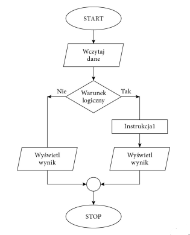
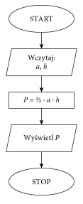
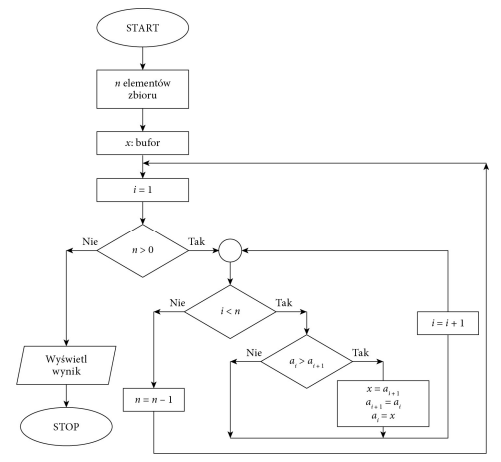
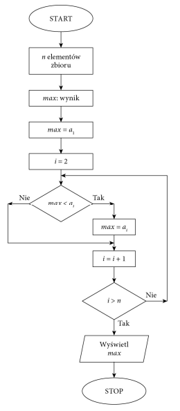

Algorytm to zestaw ściśle określonych czynności prowadzących do wykonania pewnego zadania. Określa sposób rozwiązania problemu i ma zastosowanie w różnych dziedzinach. Języki programowania to narzędzia, które bardzo dobrze nadają się do zapisu algorytmów. Aby napisać dobry program komputerowy, należy opracować skuteczny algorytm i zdefiniować dla niego odpowiednie struktury danych.
Algorytm przetwarzania danych powinien przy takim samym zbiorze danych wejściowych zwracać zawsze taki sam wynik. Ale stanie się tak tylko w dokładnie takich samych warunkach i przy tych samych danych pomocniczych. Zwykle przy projektowaniu algorytmu zakłada się, że dane wejściowe są poprawne, ale bywają algorytmy, które nie tylko przetwarzają dane, lecz również je weryfikują.
W rzeczywistości tak jak nie każdy problem można rozwiązać, tak nie każdą metodę rozwiązania problemu można zapisać przy użyciu algorytmu. Aby problem mógł być rozwiązany za pomocą komputera, musi zostać zapisany w postaci algorytmu. Wynika to z tego, że komputer potrafi rozwiązywać tylko problemy, dla których rozwiązanie zostanie zdefiniowane w postaci jednoznacznych kroków, czyli algorytmu. Jeżeli nie można zdefiniować rozwiązania w postaci algorytmu, nie ma możliwości rozwiązania go z wykorzystaniem komputera.
Zdefiniowany algorytm może zostać zapisany w wybranym języku programowania. Ale ten sam algorytm może zostać zapisany różnie w zależności od użytego języka programowania.
Zapis algorytmu w wybranym języku programowania nazywamy implementacją algorytmu.
Algorytm opisujący operacje do wykonania może zostać zapisany w różny sposób. Może to być zapis słowny, lista kroków do wykonania, pseudokod, drzewo algorytmu lub schemat blokowy.
Schemat blokowy
Przykład 1
Algorytm obliczania pola trójkąta przedstawiony w postaci schematu blokowego.
Jednym z podstawowych zagadnień algorytmicznych jest porządkowanie zbioru danych według określonych jego cech. Szczególnym przypadkiem porządkowania danych jest sorto- wanie liczb lub słów. Algorytmy sortowania są klasyfikowane ze względu na sposób działania, złożoność lub stabilność. Prostą metodą sortowania jest sortowanie bąbelkowe. Polega ono na porównywaniu dwóch sąsiednich elementów i zamianie ich miejscami, gdy są ustawione w nieprawidłowej kolejności. Sortowanie kończy się, gdy przy kolejnym przejściu nie ma żadnej zmiany kolejności elementów.
Przykład 2
Sortowanie bąbelkowe — schemat blokowy.
Sposób działania algorytmu szybkiego wyszukiwania elementu w zbiorze zależy od tego, czy dane zostały uporządkowane, czy zostały zapisane w przypadkowej kolejności. Jeśli dane są nieuporządkowane, należy przejrzeć wszystkie elementy, aby znaleźć ten właściwy.
Przykład 1
Znajdowanie największego elementu w zbiorze nieuporządkowanym:
Dane: n-elementowy zbiór liczb naturalnych Wynik: max — największa liczba znajdująca się w zbiorze Krok 1. Przyjmij, że pierwszy element w zbiorze jest największy, czyli max = a1.
Krok 2. Dla kolejnych elementów a1, gdzie i = 2, 3, …, n, wykonaj krok 3. oraz krok 4.
Krok 3. Sprawdź, czy max jest mniejsze od a1.
Krok 4. Jeżeli tak, to dla max przyjmij a1.
Przykład 2
Znajdowanie największego elementu w zbiorze nieuporządkowanym — schemat blokowy.
